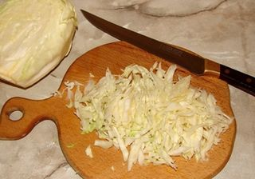
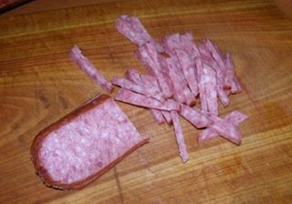
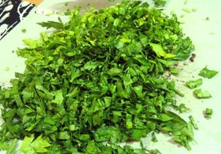
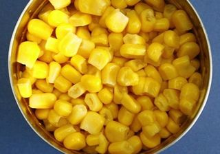
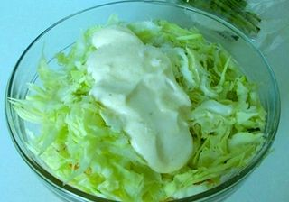

Шаг 1: подготавливаем капусту.

Промываем капусту под проточной водой. Просушиваем кухонным бумажным полотенцем ингредиент, чтобы в салат не попала лишняя жидкость. На разделочной доске с помощью ножа тоненько шинкуем овощной компонент настолько, насколько это возможно!
Внимание: для этого необходимо выбрать очень острый режущий инвентарь, чтобы получились тоненькие капустные полоски. Твердый кочан срезаем ножом, он нам не пригодится. Мелко рубленый компонент перекладываем в глубокую миску.
Шаг 2: подготавливаем колбасу.

Для этого салата отлично подойдет как вареная, так и копченая колбаса. Что касается последней, то можно брать как сырокопченую, так и полукопченую. Вкус от этого не испортится. Главное, чтобы понравилось вам и вашим гостям! Ножом отчищаем ингредиент от шкурки и нарезаем на небольшие кусочки на разделочной доске. Измельченный продукт перекладываем в миску к капусте.
Шаг 3: подготавливаем зелень.

Зелень петрушки промываем под проточной водой и после – обтираем бумажным полотенцем. На разделочной доске ножом мелко рубим ингредиент и перекладываем в миску к остальным измельченным компонентам.
Шаг 4: подготавливаем кукурузу.

Открываем консервным ножом банку с консервированной кукурузой. Придерживая крышку емкости, сливаем лишнюю жидкость и с помощью столовой ложки перекладываем ингредиент в миску с измельченными продуктами.
Шаг 5: готовим Салат капустный с колбасой.

В миску со всеми необходимыми компонентами блюда выкладываем столовой ложкой майонез. Чем жирнее будет компонент, тем насыщеннее по вкусу будет наш салат и тем меньше будет в нем лишней жидкости! Майонез добавляем «на глаз» кто как любит. Солим и перчим по вкусу. Хорошо все перемешиваем ложкой и даем настояться в течение 15-20 минут в холодильнике.